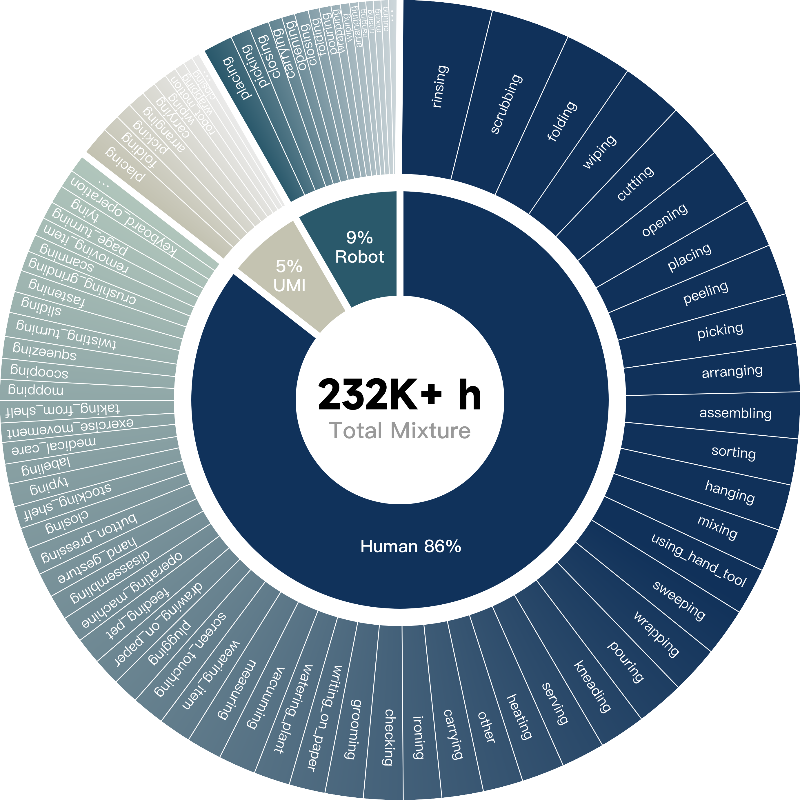

Fully causal autoregressive WAM
Jointly model embodiment-specific actions, multi-view observations, and robot states in the order used by real robot control.

An Embodied World Action Model for Physical AI
A fully causal autoregressive World Action Model that unifies executable robot policy and action-conditioned world simulation across heterogeneous embodiments.
Riemann-1.0 turns heterogeneous embodied experience into a causal action-video model that follows real robot interaction: history predicts the next action chunk, actions condition future visual dynamics, and new observations refresh the context for closed-loop control.
Jointly model embodiment-specific actions, multi-view observations, and robot states in the order used by real robot control.
Progressively acquire embodied knowledge through three stages: unlabeled egocentric video learning, mixed action–trajectory supervision, and robot-specific policy enhancement.
Use one causal action-video model for both executable action prediction and action-conditioned future video generation.
Riemann-1.0 turns large-scale heterogeneous embodied experience into a generalist closed-loop robot policy, executing complex long-horizon real-world tasks with precise manipulation. The following videos showcase the complete process of Riemann-1.0 autonomously performing complex real-world tasks after post-training with simple data collection, without complex data-engineering pipelines such as DAgger..
For real-world evaluation, we fine-tune a generalist model on all demonstration data, enabling a single policy to perform all target tasks. Across the following four manipulation tasks, Riemann-1.0 maintains at least 80.0% success rate (SR) and 91.0% progress success rate (PSR) on every task, while exceeding the strongest open-source baseline by 15 SR points on average.
Place the stuffed toy, tissue pack, charger, cube, and black tape into the box, then place the pen into the pen holder.
Fold this deformable garment on the table through bimanual manipulation.
Stack the cubes with the right hand in the order of blue, yellow, red, green, and green
Put the spoon and fork into the basket, and place the plate and bowl on the rack.
Held-out real-robot evaluations compositional generalization by recombining seen objects into unseen tasks, and OOD zero-shot transfer with unseen objects and unseen tasks without any additional demonstrations.
Riemann-1.0 reaches 99.0% average success rate on LIBERO, 94.3% on RoboTwin 2.0, and 62.6% on RoboCasa365.
Riemann-1.0 converts 232K+ hours of heterogeneous data into action-level supervision through hierarchical VLM segmentation, instruction and action annotation, quality filtering, 3D hand-action reconstruction, semantic categorization, and scene-skill balancing. Egocentric human videos provide broad interaction priors, while UMI / exoskeleton demonstrations and robot trajectories progressively ground those priors in executable control.

Riemann-1.0 preserves the causal order of interaction with a unified autoregressive factorization over action and visual latents. Multi-view observations, robot states, and embodiment-specific action tokens share an Action/Video DiT with structured causal visibility, preventing future observation leakage while retaining teacher-forced training.
The same action-video objective is retained while the action loss weight increases from visual-dynamics-first pretraining to balanced multi-source alignment and finally policy-focused robot enhancement.
Frozen LAM pseudo actions supervise unlabeled egocentric video while visual dynamics dominate the objective with λ=0.1.
3D-hand human data, UMI demonstrations, and robot trajectories align real action spaces under balanced learning with λ=0.5.
High-quality robot-only trajectories sharpen state-conditioned executable control with policy-focused supervision at λ=0.9.
Riemann-1.0 denoises the next action chunk from a growing visual-state cache. After execution, real observations are encoded back into context tokens; long rollouts use a sliding temporal window while preserving the same causal semantics.
The same causal model supports two inference modes. Robot Policy maps observed history to executable actions, while World Simulator supports predicting the visual consequences of input action trajectories for rollout inspection and action-plan comparison.
Riemann-1.0 can act as a robot policy to use observations (images + states) and task prompt to denoise the next action chunk.
Given the first frame image, prompt, and input future actions, Riemann-1.0 can act as a world simulator to roll out action-consistent future observations.